مکث صبحگاهی
یک تمرین کوتاه برای آغاز روز.
دیدن جلسهها
میان روزهای شلوغ، فرصتی کوچک برای حرکت، نوشتن و آهستهتر شدن. جلسه را با هر ریتمی که برایت راحت است شروع کن.
یک تمرین کوتاه برای آغاز روز.
دیدن جلسههابه شانهها، دستها و جای پاها توجه کن.
دیدن جلسههاچند دقیقه نوشتن بدون ویرایش.
دیدن جلسهها
چهار ثانیه دم و چهار ثانیه بازدم. هر زمان خواستی تمرین را متوقف کن.
آمادهٔ شروع
برای جلسات مقدماتی تجربهٔ قبلی لازم نیست. هر تمرین با توضیح کوتاه شروع میشود.
لباس راحت، یک دفتر و کمی وقت برای خودت کافی است.
از برنامهٔ هفتگی روز مناسب را پیدا کن و دکمهٔ انتخاب جلسه را بزن.
جلسهٔ دلخواهت را انتخاب کن و خلاصهٔ درخواست را برای خودت نگه دار.
 انتخاب این قالب
انتخاب این قالب